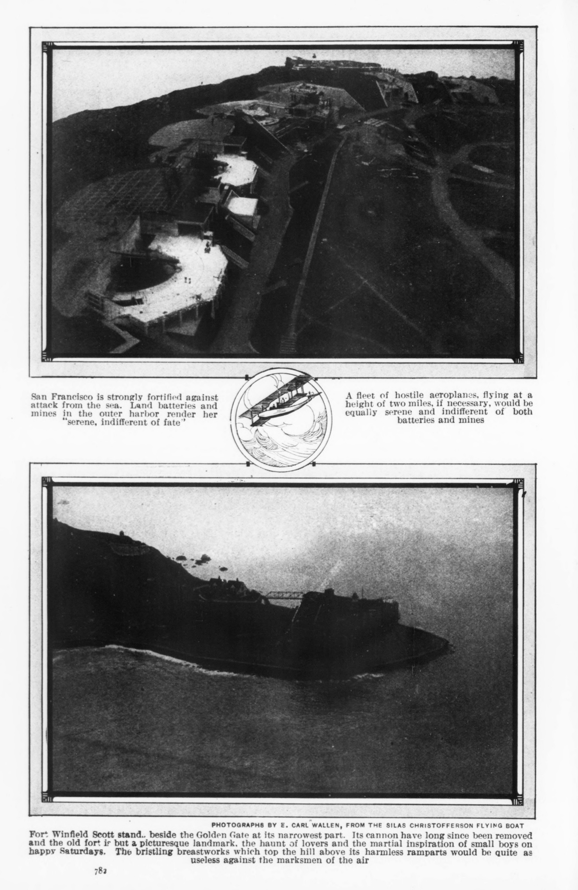

Chapter 24
The Memoirs That Decided Panama
Seen from above, the contested history of the French canal attempt was settled not in a court but on a shelf, in a Paris bookshop around 1906. Bound volumes by de Lesseps, Eiffel, Bunau-Varilla, and Bigelow stood side by side, each offering a postmortem defense or accusation, each reaching for the same official records. These records had sprung from a decision system incapable of processing doubt, and now each memoirist proposed to process it in retrospect.
The French failure was never settled by a verdict. Print settled it. Between roughly 1894 and 1914, after the American purchase and after the last of the trials, engineers, former directors, journalists, and officials published competing accounts of who lost the isthmus. Each account turned on a checkable record: the company’s own reports, the Chamber’s depositions, the hospital registers of Colón and Panama, Eiffel’s technical defense, Bunau-Varilla’s justifications, and the liquidation papers. Read against one another, they do not converge. The disagreement is the subject.
—-
Open Bunau-Varilla’s book to the pages where he addresses mortality. He had been a young engineer on the isthmus in the 1880s, and his text cites the hospital registers of Colón to argue that the death rate, while severe, was not the enterprise-killer that American critics claimed. He reproduces figures from the company’s monthly health bulletins, which the administration in Panama had compiled from ward admissions and burial records. The registers themselves, held in the hospitals of Colón and Panama, listed names, dates of admission, diagnoses, and outcomes. Bunau-Varilla does not reproduce the names. He reproduces the aggregates.
The distinction matters. The registers contained individual fates; the memoir converts them into a rate, and the rate becomes an argument about feasibility. A worker who entered the Colón hospital with yellow fever on 14 July 1885 and died there on 18 July appears in the register as a line entry. In Bunau-Varilla’s text, that line entry has become a percentage in a table, supporting a claim that mortality was manageable if the work had been organized differently.
Eiffel’s Travaux de Panama opens the same records from a different angle. His concern is not mortality but mechanics.
His book reproduces engineering drawings — the lock-canal design he had been contracted to build after the sea-level plan proved impracticable — and places them beside the company’s excavation reports to show that the technical solution existed. The drawings show concrete and steel where the original plan had shown open trench. Eiffel cites the company’s monthly progress reports, which recorded cubic meters moved at Culebra, at Gamboa, and at the Atlantic entrance. He uses those figures to argue that the work was advancing on schedule when the liquidation interrupted it. The monthly reports, compiled by the company’s chief engineers on the isthmus and transmitted to Paris, recorded what had been dug, blasted, and hauled away. They did not record what remained to be dug. Eiffel’s memoir fills that gap with an estimate. The estimate carries no marginal note. It appears on the page as fact.
The disagreement between Bunau-Varilla and Eiffel on the question of cause is structural. Bunau-Varilla argues that the sea-level plan was the original sin — a decision made at the 1879 congress against the advice of engineers who knew the Chagres. Eiffel argues that the sea-level plan was correctable, and that his lock design would have corrected it had the company not collapsed financially.
Both men cite the congress proceedings. The proceedings, published in 1880 by the Association Internationale pour le Percement de l’Isthme de Panama, recorded the votes of the technical committee and the speeches of the delegates. Bunau-Varilla points to the speeches of Adolphe Godin de Lépinay, who warned that the Chagres River would flood any sea-level channel and demanded a dam and locks. Eiffel points to the vote itself, in which the committee chose a sea-level canal by a margin that, he argues, reflected a genuine engineering consensus rather than Lesseps’s personal authority.
The proceedings support both readings. They contain the speeches and the vote. They do not contain the deliberations behind the vote. The transcript records what was said in open session. What was said in the corridors, in the hotel rooms, in the private dinners where Lesseps pressed his case, exists only in the memoirs of those who claimed to have been there.
—-
The liquidation in February 1889 had produced its own record. The project’s collapse became known as the Panama Canal Scandal after rumors circulated that French politicians and journalists had received bribes. By 1892 it emerged that 150 French deputies had been bribed into voting for the allocation of financial aid to the Compagnie Universelle du Canal Interocéanique. The judicial inquiry that followed generated depositions, indictments, and a trial in February 1893 that convicted Ferdinand de Lesseps, his son Charles (born 1849), and Gustave Eiffel of misappropriation of funds — though the verdict was later overturned on appeal for Lesseps and Eiffel on technical grounds. The trial record, published in the Journal Officiel and reproduced in the legal press, contained sworn testimony from directors, engineers, and financiers. The memoirists who wrote after 1894 all had access to this record. Each used it selectively.
Bigelow’s Les États-Unis d’Amérique et le canal de Panama approaches the same record from the American side.
Bigelow had been a diplomat and a publicist, and his book reads the French company’s published bulletins against the American engineering reports that followed the 1904 purchase. His argument is that the French failed not because the canal was impossible but because the company’s financial structure — the lottery bonds, the successive capital increases, the gap between funds raised and earth moved — made failure structurally certain.
He cites the company’s annual reports, which listed capital subscribed, capital spent, and cubic meters excavated. The reports showed that the company had raised approximately 1.2 billion francs by 1888 and had moved approximately 50 million cubic meters of material. Bigelow compares those figures to the American cost estimates, produced by the Isthmian Canal Commission in 1903, which projected a total excavation of roughly 170 million cubic meters for a lock canal.
The comparison implied that the French had completed less than a third of the work required, even on the more modest lock plan. Bigelow does not note that the French figure was for a sea-level canal, which required more excavation. The comparison is inexact. It appears on the page as decisive.
The memoirs do not converge because they are answering different questions. Bunau-Varilla asks whether the engineering was feasible. Eiffel asks whether the technical design was sound. Bigelow asks whether the financial structure was viable. Each question produces a different answer because each question selects different evidence. Bunau-Varilla’s evidence is the hospital register and the excavation report. Eiffel’s evidence is the engineering drawing and the monthly progress figure. Bigelow’s evidence is the annual report and the cost estimate. Each set of documents was generated by the same company, for the same purpose, in the same years. The documents do not contradict one another. The memoirists contradict one another by choosing among them.
—-
The strongest case against the memoirists who argued that the project was feasible — that the sea-level plan was correctable, that the death rate was manageable, that the lock design would have worked — rests on a simple proposition: the company had the records and could not act on them.
The hospital registers showed rising mortality. The monthly progress reports showed falling excavation rates. The financial ledgers showed widening gaps between capital and output. The engineering reports from the isthmus, filed by men like Godin de Lépinay and the resident engineers who worked the Cut, warned that the Chagres would flood a sea-level channel and that the rock at Culebra was harder and deeper than the congress had been told. The board of directors in Paris received these warnings. So did the shareholders’ meetings. The warnings did not change the plan. They changed the ask. More capital was requested, and the ledger turn that had begun with the first subscription notice continued: the company’s primary way of knowing itself became the financial statement, not the engineering judgment behind it.
Each memoirist cites a ledger to prove a point about engineering or medicine or finance. But the ledger itself was the instrument by which the company had known itself. The monthly bulletin told the company what it was. The annual report told the shareholders what they owned. The hospital register told the administration what it was losing. Each document was a form of self-knowledge that the company generated and could not use. The memoirists inherit this problem. They cite the documents to settle questions the documents could not settle when they were current. The settling is retrospective. It does not repair the failure to act.
—-
Bunau-Varilla’s text is the most aggressive in this regard. His 1905 book was written to influence the American decision, which was still open between the Panama route and the Nicaraguan route, and between a sea-level canal and a lock canal. He had a stake in the outcome. He had been a contractor on the French project, and he would later be involved in the American purchase as an intermediary. His memoir cites the company’s excavation reports to show that the French work was usable — that the digging at Culebra, the channels at the Atlantic and Pacific entrances, and the railroad infrastructure represented real value that the Americans could acquire. He was right about the value. The Americans did acquire it, for 40 million dollars, in 1904.
But the excavation reports he cited had been compiled to show progress to shareholders, not to assess salvage value. The same figures served different purposes in different decades. In 1886, a cubic meter moved at Culebra was evidence that the company was succeeding. In 1905, a cubic meter moved at Culebra was evidence that the Americans would not have to move it again. The figure did not change. The meaning did.
Eiffel’s memoir performs a similar inversion. His lock design, which the company had contracted in 1887 as a last attempt to save the project by abandoning the sea-level plan, is presented in his 1906 book as a mature engineering solution. The drawings are clean, the specifications detailed, the structural calculations sound. The book makes the design look inevitable. But the design had been produced under pressure — the company was already failing, the liquidation was months away, and the contract with Eiffel’s firm was a desperate attempt to shift from a plan that was not working to one that might. The memoir removes the pressure. It presents the lock canal as though it had been the logical next step, rather than what it was: a concession extracted from Lesseps by circumstances he had spent eight years refusing to acknowledge.
—-
The counter-explanation that the project was objectively beyond the means of its era has its own memoirists. The American engineering reports, particularly the findings of the Isthmian Canal Commission in 1903 and the subsequent reports of the construction era, argued that the French had underestimated the excavation required, the difficulty of the geology, and the toll of disease. These reports cited the French company’s own surveys, which had recorded the hardness of the rock at Culebra and the volume of the Chagres watershed. The French surveys were accurate. The company’s engineers had measured the rock, gauged the river, and reported the results to Paris. The reports were in the company’s archives. The memoirists who argued for feasibility had access to them. So did the Americans who argued against it.
The difference was not in the data. The difference lay in what the data was asked to do. The French company’s decision system asked the data to justify continued investment. The American decision system asked the data to determine whether investment was warranted. The same geological survey, read in Paris in 1884, produced a request for more capital. Read in Washington in 1903, it produced a recommendation to proceed with a lock canal and a budget of 375 million dollars. The survey did not change between those readings. The institution reading it changed.
The memoirs written between 1894 and 1914 reflect this institutional difference. French memoirists write from inside the system that failed. They cite the company’s records to show that the system had the information it needed. American writers cite the same records to show that the system could not use what it had. Both are correct. The company did possess the warnings. The company did not act on them. The memoirs do not resolve this contradiction because it is not resolvable at the level of documents. It is resolvable only at the level of institutions, and the institutions had changed.
—-
The hospital registers of Colón and Panama are the sharpest case. Bunau-Varilla cites them to argue that mortality, while severe, was not the decisive factor. He compares the death rates on the isthmus to mortality in other tropical construction projects and argues that the French rates were not exceptional. The comparison is not groundless — tropical disease killed workers on the Suez Canal, on the Cuban sugar plantations, and on the Brazilian railway lines.
But the registers show something the comparison cannot absorb. The registers show that the company’s hospitals were themselves sites of transmission. The wards where yellow fever patients were treated became infection centers, because the mosquito vector was not understood and the hospital layout placed healthy patients near sick ones. The registers record the admissions and the deaths. They do not record the mechanism. The mechanism was identified by the American sanitary commission in 1904, which found the mosquito vector and reorganized the hospitals. The French registers, read with American knowledge, show that the company’s own medical infrastructure was killing the workforce. Read without that knowledge, as Bunau-Varilla reads them, they show a rate that was high but not exceptional.
The memoirs cannot overcome this asymmetry. The French memoirists write with the records but without the institutional learning that came after. The American writers write with the institutional learning but without the experience of having been inside the company. Neither side possesses both. The settling of the French failure — the process by which a scandal and a disaster became a prelude to American success — occurred not because one side won the argument but because the Americans built the canal. The canal’s completion in 1914 rendered the debate academic. If the French had been right that the engineering was feasible, the Americans proved it by building the canal. If the Americans had been right that the French system could not process doubt, the American system proved it by processing doubt — by abandoning the sea-level plan, by adopting locks, by defeating the mosquito, and by completing the work in ten years.
—-
The memoirs did not decide the outcome. They decided the narrative. Bunau-Varilla’s book, with its citations of French excavation and its argument for the Panama route, was read by American congressmen during the debate over route selection in 1902. His advocacy is credited with helping swing the vote toward Panama over Nicaragua. Eiffel’s book, with its lock drawings, was read by American engineers who were designing the locks that would ultimately be built. Bigelow’s book, with its financial analysis, was read by American policymakers who were structuring the American project’s finances. The memoirs fed into the American decision system, which processed them as data rather than as advocacy. The American system did not trust the memoirists’ conclusions. It used their evidence.
The evidence the memoirists cited was the evidence the company had generated. The hospital registers, the excavation reports, the engineering surveys, the financial ledgers, the congress proceedings — all were company records, produced by a company that needed to know itself in order to justify itself to its investors. The company’s decision system required self-knowledge in the form of documents. It produced those documents. It could not act on what they showed. The memoirists inherited the documents and used them to argue about what the company should have done. The Americans inherited the documents and used them to do what the company should have done.
The difference between these two uses is the difference between a memoir and a specification. A memoir argues. A specification instructs. The French memoirists argued with the company’s records. The American engineers turned the company’s records into specifications — the excavation reports became a baseline for remaining work, the geological surveys became a foundation for lock design, the hospital registers became evidence for a sanitary program. The documents did not change. Their institutional function changed. The same figure that had been a progress report became a survey. The same register that had recorded deaths became a case for drainage.
This is why the memoirs do not converge. They are not trying to do the same thing. Bunau-Varilla is trying to redeem the French project by showing that its work was real. Eiffel is trying to redeem his engineering by showing that his design was sound. Bigelow is trying to explain the French failure by showing that its finances were structurally hollow. Each memoirist succeeds on his own terms. None succeeds on the others’ terms. The disagreement is not about facts. It is about what the facts are for.
—-
The strongest version of the counter-explanation — that the project was beyond 1880s engineering and medicine — is partially correct and partially self-serving. It is correct in that the sea-level plan required excavation volumes that the company’s equipment could not meet, and that the disease environment killed workers faster than the company could replace them. It is self-serving in that it implies no system could have done better, when the American system did better by making different decisions: a lock canal instead of a sea-level channel, a sanitary commission instead of hospital wards that spread infection, a government-funded project instead of a private capital-raising machine. The project was not beyond engineering. It was beyond the French company’s engineering. The distinction matters because the memoirists who argued for feasibility were not wrong that the isthmus could be crossed. They were wrong that the company they served could cross it.
The memoirs that decided Panama were not the ones that won the debate. They were the ones that provided the evidence the Americans used. Bunau-Varilla’s advocacy for the Panama route mattered because it arrived when the American decision was open. Eiffel’s lock drawings mattered because they arrived when the American design was being formed. Bigelow’s financial analysis mattered because it arrived when the American Congress was appropriating funds. The timing of the memoirs, not their arguments, determined their influence. A memoir published in 1905 entered a decision system that could use it. A memoir published in 1894 entered a decision system that could not. The same book, published in a different year, would have had a different fate.
The French failure was settled by print because print was what the American system read. The American engineers read the French reports. The American Congress read the French financial records. The American sanitary commission read the French hospital registers. The reading was selective, instrumental, and unsentimental. The Americans did not care whether Bunau-Varilla was right that the engineering was feasible. They cared whether the excavation data was usable. They did not care whether Eiffel was right that the lock design was sound. They cared whether the geological surveys were accurate. They did not care whether Bigelow was right that the financial structure was hollow. They cared whether the cost projections were reliable. The memoirs provided the records. The Americans provided the institution that could process them.
—-
The canal that the Americans built between 1904 and 1914 used the French excavations. The channel that the French had dug at the Atlantic entrance, the cuts they had made at Culebra, the railroad they had built and rebuilt, the towns they had established, the surveys they had completed — all entered the American project as physical assets. The Americans did not start from nothing. They started from the French failure, which had moved roughly 50 million cubic meters of earth and left it on the ground. The earth was still there. The records were still there. The memoirs were still being written.
In 1912, two years before the canal’s completion, Bunau-Varilla published a revised edition of his book. The revision dropped the argument about whether the Americans should choose Panama over Nicaragua. That decision had been made. The revision added a chapter on the lock design, citing the American engineering reports that had adopted a lock canal. Bunau-Varilla used the American reports to validate the French lock design that Eiffel had published in 1906. The citation chain had closed. The French engineer was citing the American engineer who had cited the French engineer. The records circulated. The argument had become self-referential. The canal was almost finished, and the memoirs had become a literature about a literature about a canal that was about to exist.

The canal’s completion in 1914 did not end the memoirs. It ended their urgency. After 1914, the question of whether the French project had been feasible was answered by the existence of the canal. The question of whether the French company could have built it was answered by the fact that it had not. The memoirs continued to appear — revised editions, new prefaces, translations — but they had lost their audience. The Americans who had read them no longer needed them. The French who had written them no longer had a stake. The records remained in the archives, the registers in the hospitals, the reports in the engineering libraries. The memoirs remained on the shelves. They had settled nothing that the canal itself had not settled. They had provided the evidence that the Americans used. The Americans had built the canal. The canal had made the memoirs redundant.
The last edition of Bunau-Varilla’s book, published in 1914, carried a new subtitle. It no longer read Le passé, le présent, l’avenir. It read Le passé, le présent, le succès. The word for the future had been replaced by the word for success. The future had arrived. The memoir had become a victory speech. The records it cited had not changed. The canal had changed around them.
On a shelf in Paris, the cloth bindings gathered dust. The records they cited — the hospital registers, the excavation reports, the geological surveys, the liquidation papers — sat in archives that the French Republic maintained and the American engineers had consulted. The memoirs had carried the records from the French failure into the American project. The Americans had read the records and built the canal. The French had written the memoirs and lost the isthmus. The isthmus held the canal. The canal held the excavations. The excavations held the earth the French had moved. The earth had not moved again.